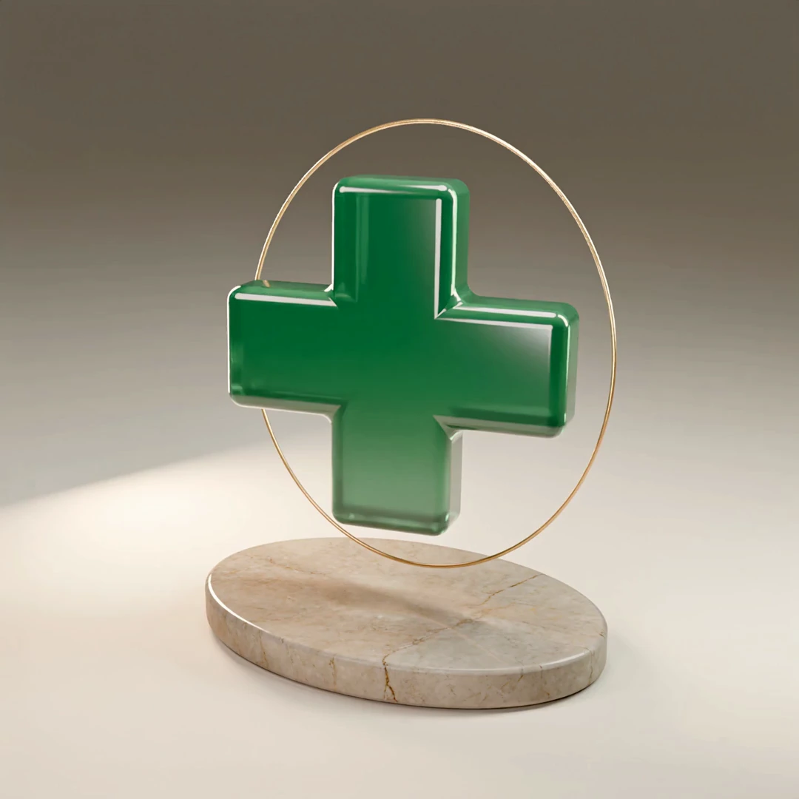

01 / CINEMATICOMovimento. Materia. Identità.IL SITO CHE SI FA RICORDARE
Una nuova prospettiva.
La tua farmacia, a Parma: titoli Sora decisi, croce Blender con regia Higgsfield e quattro render 3D dedicati ai servizi. ECG, Holter, prenotazioni e contatti si capiscono subito.
Blender + Higgsfield3D interattivoSora · Servizi in 3D
Esplora il cinematico